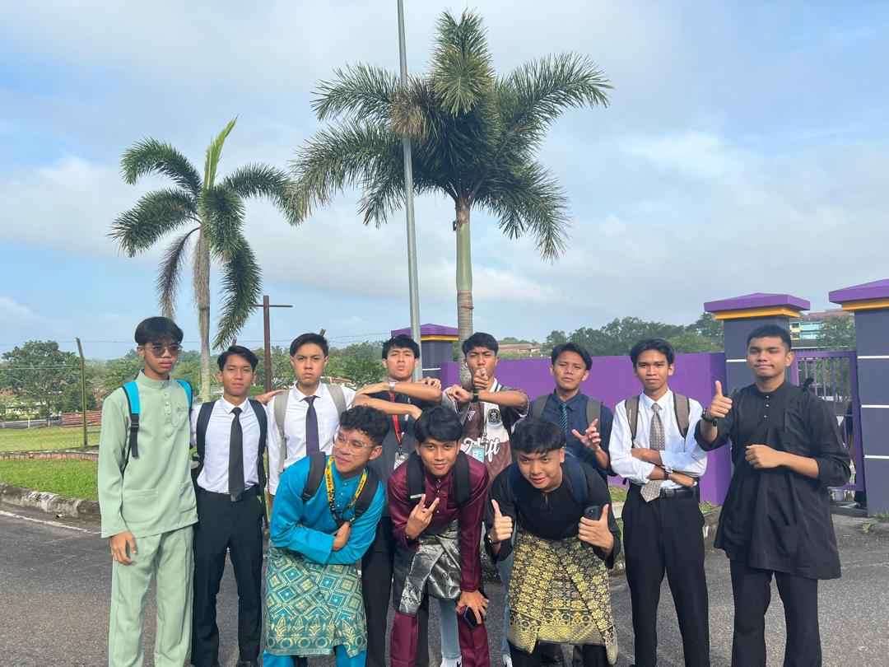
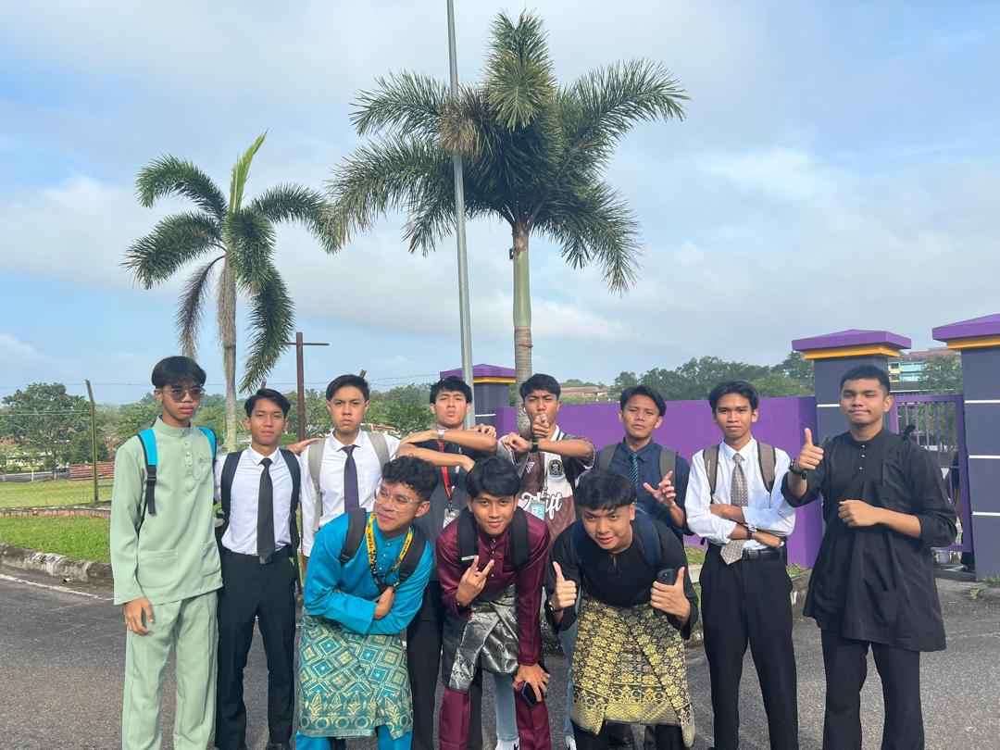
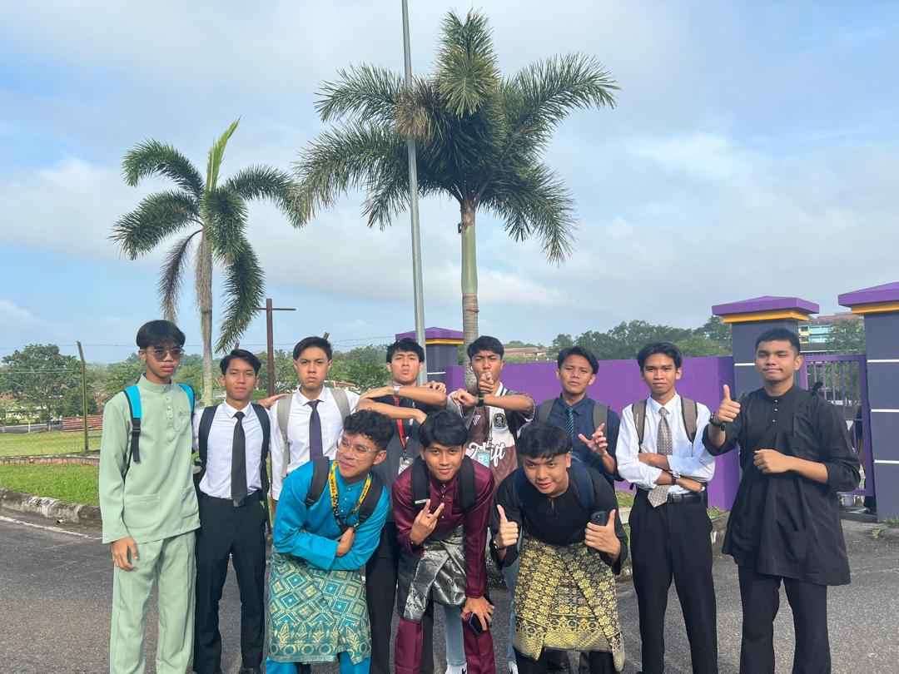

University
Currently, I am pursuing a Diploma in Information Management at UiTM Segamat.
Here are some of my memories:
 


I started my education at SK Bandar Tun Hussein Onn from 2012 – 2017.
Then, I continued my studies at SMK Bandar Tun Hussein Onn 2, where I made many great friends.
Currently, I am pursuing a Diploma in Information Management at UiTM Segamat.
Here are some of my memories:
